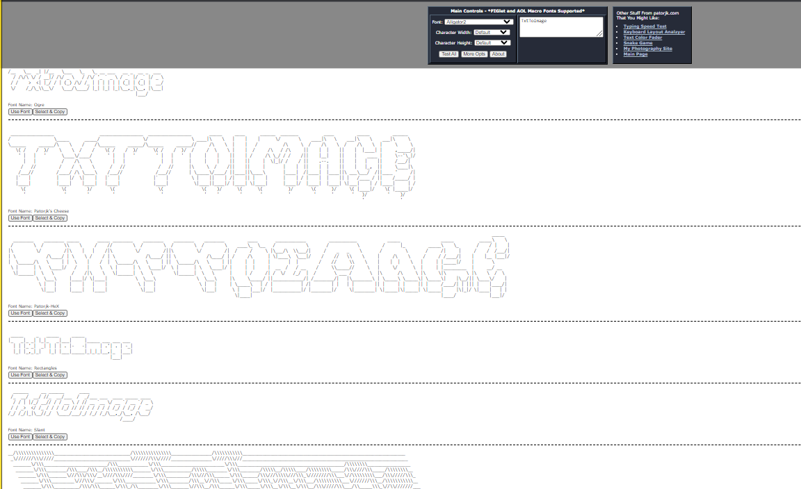

THEGAME
https://github.com/Andraelity/Wiki-1-THEGAME/From Wikipedia and Andraelity, a relation with Me and Wikipedia
This article is about my mentality being deploy in the present time and the internet, everything while we find new ways to love.
This is the index of THEGAME, Examples around the definition of my game, this means everysingle expresion around the generation, evolution, description and syntesis of each single value capable to create my definition
1.Wiki-1-THEGAME-01
https://andraelity.github.io/Wiki-1-THEGAME-01/
PythonImageComparator
This program would compare two images and return what percentage of equality they are.
Esos sonidos que me permiten analizar nuevas perspectivas de la realizacion tanto humana como narrativa, y cada una de esas propiedades que me direccionan hacia las composiciones que yo quiero desplegar sobre el ahora
Materializando ideas princesa.
2.Wiki-1-U-02
https://andraelity.github.io/Wiki-01-U-02/
Aqui esta la U
Explicando polinomios y matrices y funciones y elementos
Analizando el desarrollo analitico de la matematica
Emprendiendo el complejo psicologico a un grado mas especifico.
Aqui pudimos sintetizar conceptos alrededor del aprendizaje de la maquina generadora de conceptos, la maquina que produce apreciacion sobre el movimiento que define
Aprendiendo a reconocer elementos de caracter mas especifico.
3.TextToASCIArt
https://patorjk.com/software/taag/#p=testall&f=Alligator2&t=TxtToImage
This compose a behavior that we want to se as code
Dibujitos explicando Algoritmos
Dibujitos explicando Teorias Cientificas
Dibujitos explicando como generar proyectos los cuales obtener
How this deployment is loaded with the power to define a particular kind of expression a sensation loaded with complexity
A particular set of abilities capable to load your mind with quality and definitino
Recognizing the power of the self for being structured with the motion fulled with power and complexity
How this perception of the mind enable my self for being actually part of the present time.
4.IMAGES ABOUT MATH
https://andraelity.github.io/Repo_testing_image/
Como puedo modificar relaciones de caracter superior como yo puedo origanizar los comportamientos de los juegos con tal
De aprovechar el rendimiento de la realidad como yo puedo buscar el comportamiento.
Aprovechando el desarrollo interactivo de las imagenes en la realidad como yo puedo promover interacciones las cuales usar
Composiciones las cuales aprender como yo puedo detallar las rutas de la realidad que motivan como el aprendizaje se produce
Que tipo de modelos yo puedo aprender sobre el ser con tal de maximizar el trabajo que eleva como mi totalidad se maximiza
Esto es sobre como los aprendizajes se aprenden
Creando matematica con tal de sintetizar el desarrollo de un poder mas amplio
How to analize the power of the self, how to provide quantity and quality how to believe better in the notion of existence, how to define a new order of magnitute
AQUI E PUEDE DESARROLLAR EL CONCEPTO DE TEORIA MATEMATICA EL CUAL PROMUEVE COMO NUESTRA IDENTIDAD SE FORMALIZA, COMO SE PUEDEN ACTIVAR LAS RELACIONES
5.How to implement MATH in code
https://github.com/Andraelity/Wiki-1-U-03
Detallando las interacciones de la mente que motivan como el trabajo se puede vivir como el componente
Se puede detallar como mi realidad se puede asimilar como el proceso conceptual se vive se crea se trabaja
Aprendiendo a valorar las relaciones con el todo aprendiendo a situar el camino interno a un grado mas especifico
Asimilando las relaciones que producen concepto analizando los conceptos que producen mente y realidad
Describiendo las uniones mentales que motivan como nuestra experiencia puede suceder aprendiendo a concebir el camino
Analizano
Estar sometido a las fuerzas de mi mente las cuales buscan y desean sistemas los cuales aun no existen
Todo con tal de superar el vacio que reside en mi momento presente, el cual unicamente puede ser saciar con la construccion de un contexto el cual me ayude a emprender proyectos del caracter que yo necesito
Aqui pude yo soltar todas esas dudas que nacian y crecian en un entorno donde la solucion no se presentaba, y con ello el distanciamiento de mi identidad como persona
6.LOVE3-IN-CODE
https://github.com/Andraelity/LOVE3-IN-CODE
Meditaciones Andresito Textuales Narrativas Psicologicas Evolutivas
Aqui pude desplegar esas caracteristicas que me ayudan a entender el concepto del presente
Mi concepto mi propia manera de percibir el ahora, la singularidad de sentirme a mi mismo persona
Poder acercarme a la perfeccion de la teoria sobre mi mismo
Construir esas bases que maximizan la reproduccion de mis ideas en pro hacia el desarrollo de mi ser en su mas alta forma
HMMMMM la vida cierto
Estar sometido a las fuerzas de mi mente las cuales buscan y desean sistemas los cuales aun no existen
Todo con tal de superar el vacio que reside en mi momento presente, el cual unicamente puede ser saciar con la construccion de un contexto el cual me ayude a emprender proyectos del caracter que yo necesito
Aqui pude yo soltar todas esas dudas que nacian y crecian en un entorno donde la solucion no se presentaba, y con ello el distanciamiento de mi identidad como persona
7.CodigoGAMEUNITY
https://andraelity.github.io/CodigoGAMEUNITY/
Sintetizando propiedades de codigo, Sintetizando analisis de la realidad los cuales aprender con tal de mejorar el todo
Aqui quiero desplegar ideas sobre el ahora las cuales me permitan mejorar como el ritmo de la totalidad se analiza, como el concepto del saber se produce
Aqui despliego la siguiente propiedad sobre el ahora, asi yo puedo sintetizar el concepto que responde a la totalidad de mi mente.
Mejorando como el concepto de idea se produce como el movimiento caracteristico del ahora se emprende, desarrollando con ello el valor del ahora.
Aprendiendo proposiciones sobre el saber las cuales diferenciar y motivar con tal de maximizar la realidad que yo puedo diferenciar que yo puedo conectar
El elemento que me promueve como sujeto, como personalidad, como estructura narrativa pensante, ese analisis que nos ayuda a generar concepto.
Definiendo codigo.
8.CodigoGAMEUNITY
https://andraelity.github.io/CreandoCodigoLenguage/
Sintetizando propiedades de codigo, Sintetizando analisis de la realidad los cuales aprender con tal de mejorar el todo
Aqui quiero desplegar ideas sobre el ahora las cuales me permitan mejorar como el ritmo de la totalidad se analiza, como el concepto del saber se produce
Aqui despliego la siguiente propiedad sobre el ahora, asi yo puedo sintetizar el concepto que responde a la totalidad de mi mente.
Mejorando como el concepto de idea se produce como el movimiento caracteristico del ahora se emprende, desarrollando con ello el valor del ahora.
Aprendiendo proposiciones sobre el saber las cuales diferenciar y motivar con tal de maximizar la realidad que yo puedo diferenciar que yo puedo conectar
El elemento que me promueve como sujeto, como personalidad, como estructura narrativa pensante, ese analisis que nos ayuda a generar concepto.
Definiendo codigo.
8.RepositoryAboutShaders
https://andraelity.github.io/RepositoryAboutShaders/
Que estamos diseñando una forma de establecer comunicacion con la version mas calificativa que tenemos presente
Queremos lograr un concepto basado en el completo aprendizaje del lenguaje que produce mente y memoria y saber
Buscamos que a todo momento se pueda generar un producto mucho mas calificativo un concepto basado en la completa abstraccion del desarrollo mental
Analizamos conceptos en la totalidad los cuales promueven como la memoria se aprende como la realidad se concibe como el misterio calificativo evoluciona
Entendiendo como las propiedades del saber producen el cambio que buscamos en el saber el cambio que buscamos sintetizar en el ahora el cambio que queremos producir en la mente
Definiendo codigo.